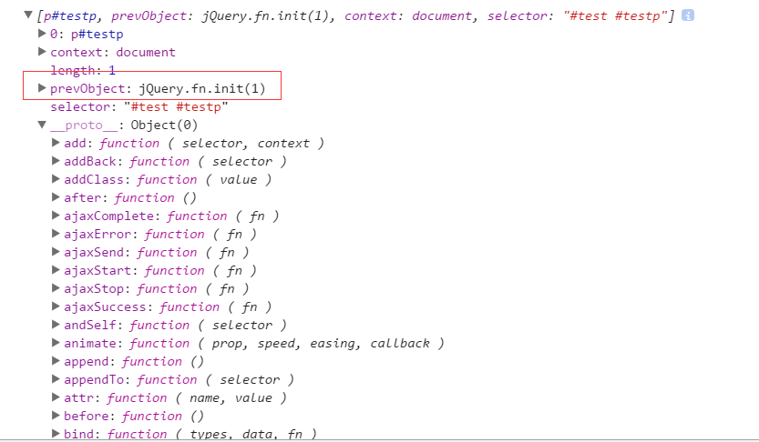

jQuery2.1.1源码解析五、回溯处理的设计
有链式调用必然会有回溯设计，这一节介绍jQuery的回溯处理的设计。
我们知道Query选择器最终都是通过DOM接口实现取值的, 但是通过jQuery处理后返回的不仅仅只有DOM对象，而是一个包装容器，下面是控制台打印的jQuery对象（使用了链式操作之后）。

在jQuery对象中有个prevObject对象，这个是干嘛用的呢？
如果你想知道prevObject是做什么的，咱们首先得先来了解一下jQuery对象栈，jQuery内部维护着一个jQuery对象栈。每个遍历方法都会找到一组新元素（一个jQuery对象），然后jQuery会把这组元素推入到栈中。
而每个jQuery对象都有三个属性：context、selector和prevObject，其中的prevObject属性就指向这个对象栈中的前一个对象，而通过这个属性可以回溯到最初的DOM元素集中。
jQuery为我们操作这个内部对象栈提供个非常有用的2个方法
总的来说：end方法就是回溯到上一个Dom合集,因此对于链式操作与优化，这个方法还是很有意义的。下面是jQuery的end方法的源码：
prevObject在什么情况下会产生？
在构建jQuery对象的时候，通过pushStack方法构建，如下代码：
接着我们看pushStack对象，作用就通过新的DOM元素去创建一个新的jQuery对象:
流程解析：
1、首先构建一个新的jQuery对象，因为constructor是指向构造器的，所以这里就等同于调用jQuery()方法了，返回了一个新的jQuery对象；
2、然后用jQuery.merge语句把elems节点合并到新的jQuery对象上；
3、最后给返回的新jQuery对象添加prevObject属性，我们看到prevObject其实还是当前jQuery的一个引用罢了，所以也就是为什么通过prevObject能取到上一个合集的原因了。